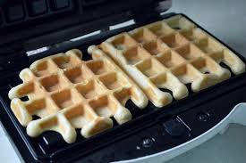

My room-mate and I have a very cute tradition of always cooking waffles at lazy evenings. I see it as a good way of procrastination. Waffles are great source of energy for times of studying or work. The process of preparing them is very short and easy.
Firstly, we mix flour, salt, baking powder and sugar in a big bowl. In the same time, we put the waffle iron to preheat in whatever temperature- I prefer high. Next step is beating eggs in another bowl, add milk, butter and vanilla. Then we add this mixture to the flour mixture and continue beating until is blended. The last step in cooking the waffles is slowly pouring the mixture into the preheated waffle iron and let them each time until they become golden and a bit crispy. The best part is eating them warm with a bit of jam. Yammy :) I really really think you all should try to cook this kind of waffles.
